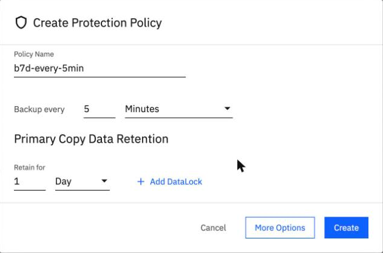
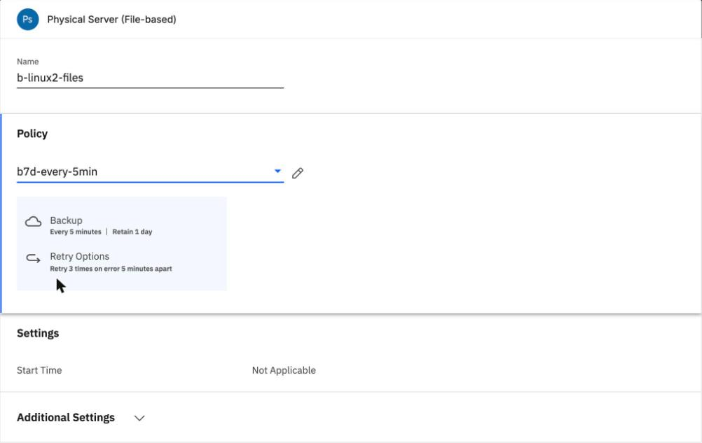
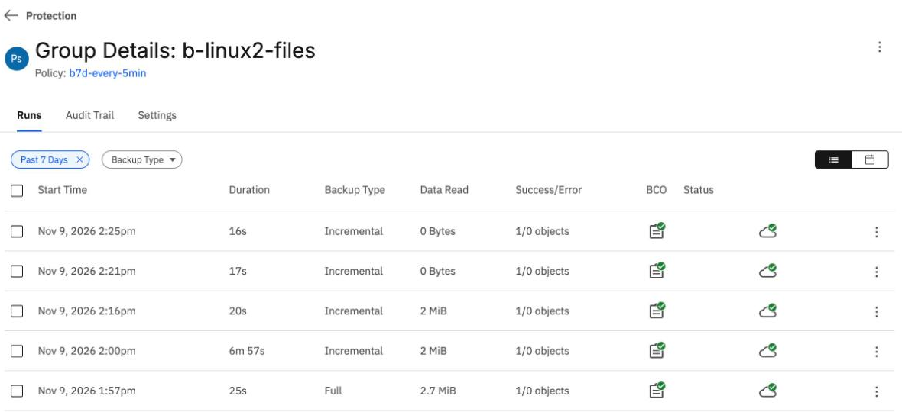
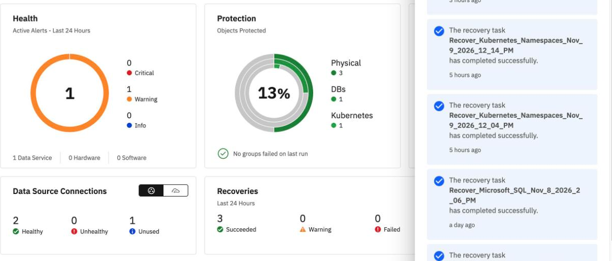
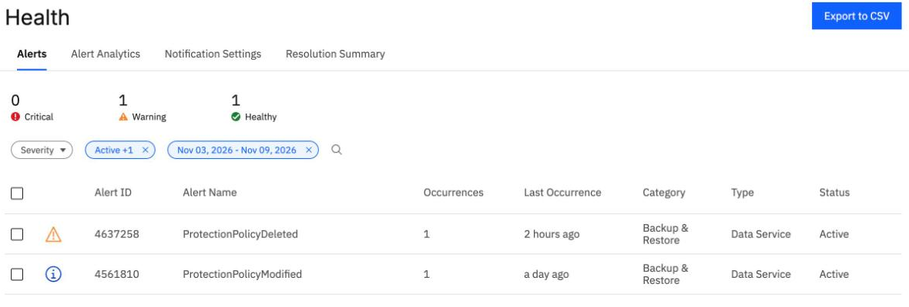
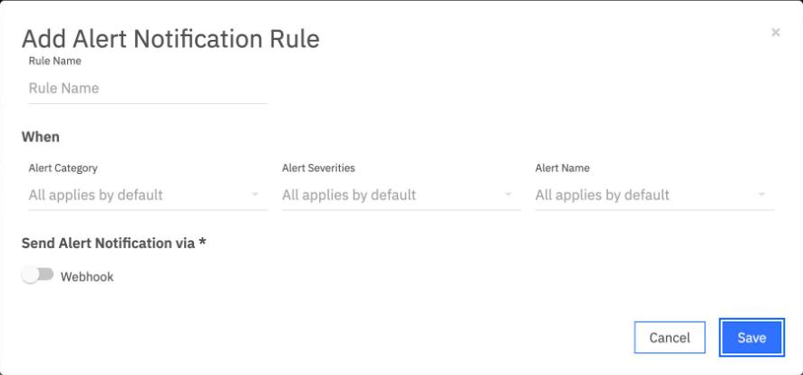

Schedules and alerts
By the end you can say how far apart scheduled runs start, name which failures raise an alert and which raise none, and say how the console can send an alert on.
Northgate Freight is a made-up company. While it tests, it gives one group a backup every five minutes. It also wants to know whether BRS will warn it when a backup or a restore fails.
The schedule numbers and screens come from a run in our lab. The alerts come from a run and from the console. Server addresses and job names in recorded output are replaced with made-up names, and server names are blurred in the screenshots.
How far apart do the runs start?
Northgate makes a policy that backs up every 5 minutes and keeps each backup for 1 day. It adds a 2 MB file to the folder, then switches the group to the new policy and un-pauses it. The first run starts seconds later.
Run Started (UTC) Read 1 14:16:15 2 MiB (the new file) 2 ? ? 3 ? ?
When does run 2 start?
Show the answer
Run 2 started at 14:21:01, 4 min 46 s after run 1. Run 3 started at 14:25:54, 4 min 53 s after run 2. In the first run the gaps were 4 min 4 s and 4 min 7 s. In both runs the gap was under 5 minutes.
The file was added before run 1. How much do runs 2 and 3 read?
Show the answer
Run Started (UTC) Read 1 14:16:15 2 MiB (the new file) 2 14:21:01 0 3 14:25:54 0
Set the schedule and watch it run
These screens come from the BRS console in our lab. Click where you would click. After two misses the right place is marked.

Northgate is making the 5-minute policy. Where is the schedule set?
Show where
Right. Set Backup every to 5 and the unit to Minutes; the list has Minutes, Hours, Days, Week and Month. The dialog first adds a lock of 2 Weeks and then says "Maximum value is 0", because a lock cannot be longer than the retention. Northgate removed it, as in unit 3.1.

Northgate picked the new policy for the group. Which line shows the group no longer waits for a daily start time?
Show where
Right. Start Time changes to Not Applicable. Under Additional Settings, Northgate also switched Pause Future Runs off, then clicked Save.

The group has been running by itself. Click the figure that shows the later runs read nothing.
Show where
Right. Data Read is 0 Bytes for the runs at 2:21 pm and 2:25 pm. The run at 2:16 pm read 2 MiB, the new file.
To put the group back, Northgate edited it again, chose the original policy, switched Pause Future Runs on and deleted the test policy. This unit does not cover alerts for this, blackout windows, a daily or weekly schedule over a real day, or retention expiry.
The failure that no alert reported
Northgate plans to learn about problems from the alert list. In our lab we read the alerts raised by the failures of earlier units. For each failure below, say whether BRS raised an alert.
A restore of Windows files fails.
Show the answer
In our lab, a failed Windows restore raised two critical alerts, both still Open.
RestoreTaskFailed (CE00610034), Critical "Restore for object ng-win-01 in job ng-win-restore failed"
The agent on a Linux server is down for 6 minutes after a reboot.
Show the answer
The agent was down from 14:48 to 14:54 and raised no alert in those 6 minutes. With the agent down from 13:59 to 14:06 UTC, the console showed none either.
Northgate deletes the 5-minute test policy. Does BRS raise an alert?
Show the answer
The deletion raised ProtectionPolicyDeleted (CE00610017), severity Warning, still Open. It is an audit event.
Watch for this. In our lab, a Linux backup that waited with 0 bytes read raised no alert, and neither did an agent outage. A connector alert did not match any outage of ours.
Read the alerts and see how to send them
These screens come from the BRS console in our lab. Click where you would click. After two misses the right place is marked.

Northgate opens the dashboard. Where does it show the active alerts of the last 24 hours?
Show where
Right. The Health card counts them by severity and by type: here 1 Warning, 1 Data Service. The bell at the top right is not the alert list: its panel, on the right of this screen, lists finished tasks such as recoveries.

This is System > Health > Alerts. Which alert came from deleting the 5-minute test policy?
Show where
Right. ProtectionPolicyDeleted, a warning. The other is ProtectionPolicyModified, information. Export to CSV is at the top right. The console showed nothing for the failures of that day: the agent down after a reboot, the backup that waited 6 minutes, and the agent cut off by the private endpoint.

Northgate opens System > Health > Notification Settings and clicks Add Alert Notification Rule. Where does it choose how the alert is sent?
Show where
Right. Under Send Alert Notification via, Webhook is the only choice, so the console cannot send mail. Before the form, the page said "No Notification Rules." The form was opened and cancelled; no rule was saved.
Delivery to a webhook was not tested: it needs an endpoint the service can reach. We also did not test whether a rule delivers mail or a script, resolving an alert by hand, or the Helios page for alerts.
Three questions
A policy says every 5 minutes. In our lab, how far apart did the runs start?
Show the answer
4 min 46 s and 4 min 53 s; 4 min 4 s and 4 min 7 s in the first run.
Which of these raised no alert in our lab?
Show the answer
The failed restore raised a critical alert and the deleted policy raised a warning. The agent outage raised none.
In the console, how can an alert notification rule send an alert?
Show the answer
Webhook is the only choice under Send Alert Notification via. Delivery to a webhook was not tested.
You know what BRS will and will not tell you
A policy of every 5 minutes started runs a little under 5 minutes apart in our lab. A failed restore raised a critical alert; an agent outage and a waiting backup raised none. The console offers only a webhook for sending alerts, and webhook delivery was not tested.